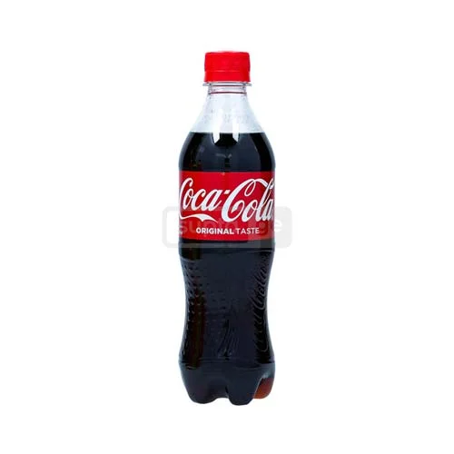
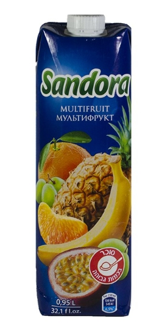

Doritos არის მსოფლიოში ცნობილი სიმინდის ჩიფსების ბრენდი. ის გამოირჩევა
მრავალფეროვანი გემოთი და ხრაშუნა ტექსტურით, რაც მას სრულყოფილ საჭმელად
აქცევს ფილმების ან წვეულებების დროს.
Coca-Cola არის მსოფლიოში ყველაზე პოპულარული გაზიანი სასმელი. ის პირველად დამზადდა 1886 წელს და დღემდე რჩება ლიდერ პროდუქტად სასმელების ბაზარზე.
Sandora არის უკრაინული წვენების ბრენდი, რომელიც ცნობილია თავისი ნატურალური და გემრიელი ხილის წვენებით. ის შესანიშნავი არჩევანია ჯანსაღი ცხოვრების სტილისთვის. 